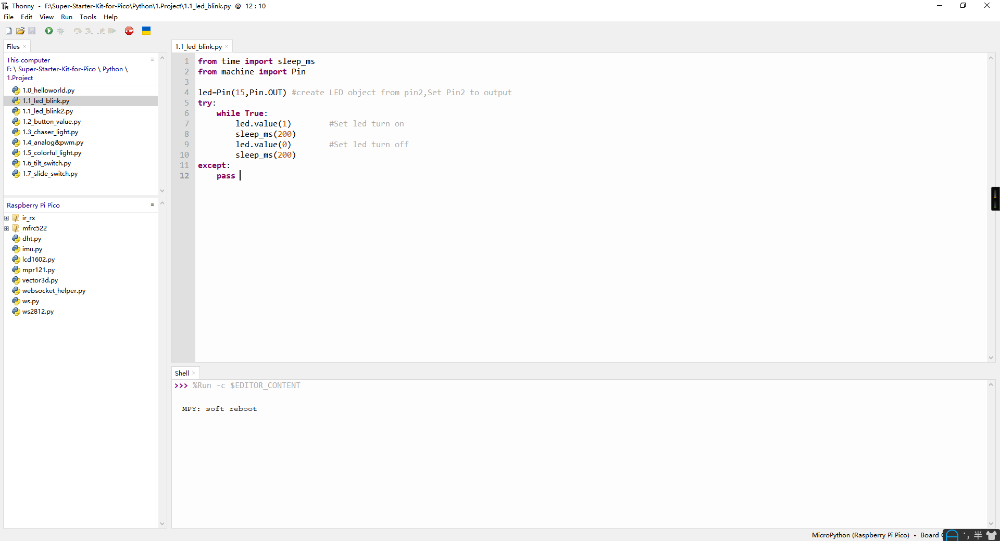

1.1 LED_Blink (Important)
This chapter is the Start Point in the journey to build and explore Raspberry Pi Pico electronic projects. We will start with simple “Blink” project.
In this project, we will use Pico to control blinking a common LED.
Power Pico needs 5v power supply. In this tutorial, we need connect Pico to computer via USB cable to power it and program it.
Component List
Raspberry Pi Pico W x1
MicroUSB cable x1
830 Tie-Points Breadboard x1
LED x1
Resistor 220Ω x1
Jumper Wire Several
Component knowledge
LED
Resistor
Breadboard
Schematic
This circuit works on a simple principle, and the current direction is shown in the figure. The LED will light up after the 220ohm current limiting resistor when GP15 outputs high level (3.3v). The LED will turn off when GP15 outputs low level (0v).
Connect

Code
Note
Open the
1.1_led_blink.pyfile under the path ofSuper-Starter-Kit-for-Pico\Python\1.Projector copy this code into Thonny, then click “Run Current Script” or simply press F5 to run it.Don’t forget to click on the “MicroPython (Raspberry Pi Pico)” interpreter in the bottom right corner.
After running the code, you will see the LED light up for 200 milliseconds and then turn off for 200 milliseconds.
If you want to stop the code, you can click the stop button in the IDE or press Ctrl+C in the shell area.

The following is the program code:
from time import sleep_ms
from machine import Pin
led = Pin(15, Pin.OUT) # Create an LED object from pin 15 and set it as output
try:
while True:
led.value(1) # Turn on the LED
sleep_ms(200)
led.value(0) # Turn off the LED
sleep_ms(200)
except:
pass
We can also simplify the previous code by using MicroPython’s API. By calling the
led.toggle() method in the machine.Pin class, we can more concisely change the
state of the pin without having to explicitly set the pin’s high or low voltage
value.
Note
Open the
1.1_led_blink2.pyfile under the path ofSuper-Starter-Kit-for-Pico\Python\1.Projector copy this code into Thonny, then click “Run Current Script” or simply press F5 to run it.Don’t forget to click on the “MicroPython (Raspberry Pi Pico)” interpreter in the bottom right corner.
The following is the program code:
import machine
import utime
led = machine.Pin(15, machine.Pin.OUT) # Create a Pin object for the LED connected to pin 15, set as output
while True: # Infinite loop to keep the program running
led.toggle() # Toggle the LED state: turn it on if it's off, and turn it off if it's on
utime.sleep(1) # Wait for 1 second before toggling the LED again, creating a blinking effect every 2 seconds